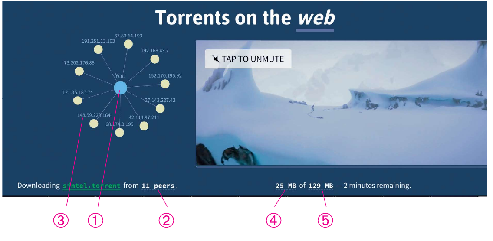
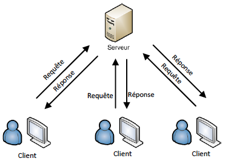
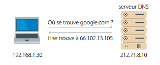

Chapitre 1 – Internet
Les réseaux pair-à-pair
Act. Activité : les réseaux pair-à-pair
La plupart des services utilisés sur Internet reposent sur des serveurs mis en place par des entreprises. Pourtant, toutes les machines connectées à Internet peuvent potentiellement communiquer entre elles. C’est le cas avec les réseaux pair-à-pair (peer-to-peer, ou P2P), utilisés surtout pour le partage de fichiers (jeux, vidéos, etc.).
Comment le modèle P2P fonctionne-t-il ? Quels sont les avantages et les risques de son utilisation ?
Consigne : étudie les quatre documents ci-dessous et réponds aux questions qui les accompagnent.
Doc. 1 Le pair-à-pair toujours utilisé
Environ 70 % des internautes disent se rendre le plus souvent directement sur des sites ou applications déjà connus lorsqu’ils recherchent une œuvre. Pour la très grande majorité d’entre eux, les pratiques illicites se résument au streaming, au téléchargement et au pair-à-pair, avec peu d’évolutions depuis 2013.
Le streaming s’affirme comme le mode d’accès principal, tandis que le pair-à-pair recule. Le streaming est à la fois le mode le plus répandu (92 % des consommateurs) et le plus régulier (79 % l’utilisent au moins une fois par mois). Le téléchargement vient ensuite (74 % ; 46 % mensuellement). Le pair-à-pair est un usage moins répandu, en baisse (35 % contre 46 % en 2013) et occasionnel (21 % d’utilisateurs mensuels).
Principaux modes d’accès
Base : ensemble des consommateurs
Source : « La mixité des usages licites et illicites au cœur des stratégies d’accès aux musiques, films et séries en ligne », L’Essentiel n° 9, avril 2018, hadopi.fr.
Le pair-à-pair (peer-to-peer, P2P) définit le fonctionnement d’un logiciel qui permet le partage d’une donnée constituée de plusieurs fragments répartis sur les pairs. Dans un réseau pair-à-pair, chaque client est lui-même un serveur.
Comparez vos modes d’accès aux biens culturels dématérialisés (streaming, pair-à-pair, etc.) par rapport à l’ensemble des consommateurs. Où vous situez-vous ?
Doc. 2 Un site de téléchargement P2P
Le site Webtorrent.io utilise une technologie qui permet de faire du téléchargement en P2P directement depuis le navigateur Internet.

Associe à chaque élément numéroté le terme qui convient parmi les suivants : mon ordinateur · adresse d’un pair · nombre de pairs · quantité téléchargée · taille totale de la vidéo.
- ① ………………………
- ② ………………………
- ③ ………………………
- ④ ………………………
- ⑤ ………………………
Doc. 3 Principe d’un protocole de partage de fichiers
Un client pair-à-pair commence par se connecter à un tracker, une machine qui maintient une liste de pairs ayant un fragment du fichier. Le logiciel récupère les adresses IP des pairs qui ont chacun un ou plusieurs fragments du fichier. Il contacte chaque pair en même temps pour télécharger chaque fragment, et enfin reconstituer la donnée.
Pendant ce temps, la machine où se trouve le logiciel devient elle-même un pair pour les autres utilisateurs : elle diffuse les fragments du fichier qu’elle a récupérés. Si la donnée est illégale (contenu illégal ou protégé par le droit d’auteur), l’utilisateur est responsable de la diffusion de cette donnée.
| Fragment | IP |
|---|---|
| #1 | 12.34.56.78 |
| #231 | 99.98.0.34 |
| #115 | 12.34.56.78 |
Après ces échanges, le tracker ajoute l’adresse 223.34.42.69 à sa liste : la machine 1 est devenue un pair à son tour.
Un « pair » (peer, en anglais) est une machine depuis laquelle on peut télécharger une donnée.
En t’appuyant sur le texte, identifie le rôle des différentes machines du schéma au cours du temps.
Doc. 4 Les jeunes face aux pratiques illicites
Les 15-24 ans semblent bien connaître les risques légaux liés à leurs pratiques illicites : ils ont à l’esprit le risque de recevoir une recommandation de l’Hadopi, mais estiment avoir le temps d’adapter leurs comportements, la sanction ne pouvant intervenir qu’au bout de trois recommandations. Ils se montrent aussi plus enclins à adopter des techniques de contournement comme le VPN, ou à opter pour le streaming afin de ne pas prendre de risque.
« Je regarde si le site paraît louche. Par exemple un site où le bouton de téléchargement n’est pas clair ou si l’antivirus m’indique que le site n’est pas fiable, je ne vais pas dessus. »
Source : « Les 15-24 ans : un rapport paradoxal à la création, entre valorisation des “petits” artistes et rejet du “système” », L’Essentiel n° 10, mai 2018, hadopi.fr.
Haute Autorité pour la diffusion des œuvres et la protection des droits sur Internet. Depuis le 1er janvier 2022, l’Hadopi a fusionné avec le CSA pour former l’Arcom.
À quel type de pratique illicite est-il fait référence ? Quels sont les risques légaux en cas de pratique illicite ?
Donnez des arguments pour et contre l’utilisation du P2P pour le téléchargement de contenus culturels.
III Modèle client-serveur
Pour communiquer avec une machine, Internet s’appuie sur le dialogue entre clients (les utilisateurs) et serveurs. Un serveur informatique est un dispositif informatique qui offre des services à un ou plusieurs clients.
Exemple : un serveur web qui héberge des sites web.
L’interaction est à l’initiative des clients, qui envoient des requêtes aux serveurs. Si le serveur peut répondre à la requête, il envoie les informations demandées au client : c’est la réponse.

Le client envoie une requête à un serveur de Google, car il souhaite voir le site s’afficher. Le serveur « entend » la demande ; s’il peut y répondre, il envoie au client les informations nécessaires pour qu’il puisse voir le site.
IV Adresse DNS
Pour trouver facilement les machines à utiliser, un registre conserve les associations entre des adresses symboliques et des adresses IP. C’est ce que l’on appelle le Domain Name System (DNS), « système des noms de domaine ». Les adresses symboliques sont organisées sous la forme d’une suite de labels séparés par des points (par exemple, www.likes.org).
Pour trouver l’adresse IP correspondante, une machine contacte un serveur DNS, qui donnera la réponse ou indiquera quel autre serveur peut répondre.

V Chronologie
Complète la chronologie avec les événements marquants de l’histoire d’Internet.
- 1968 / 1969
- 1972
- 1974
- 1989 – 1991